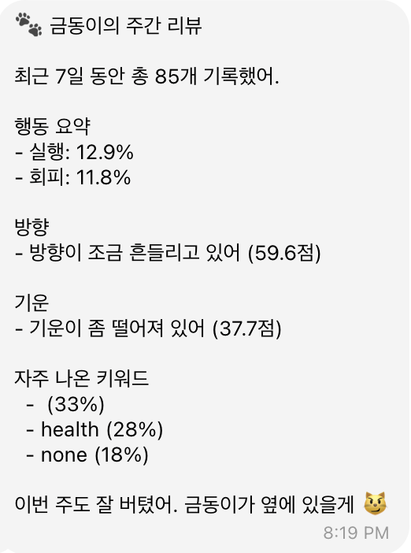
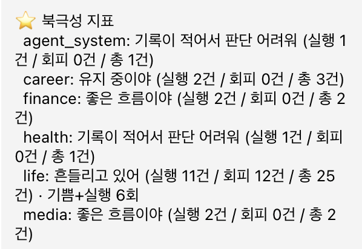
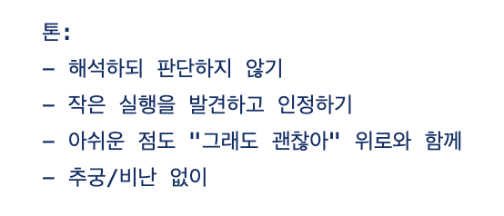
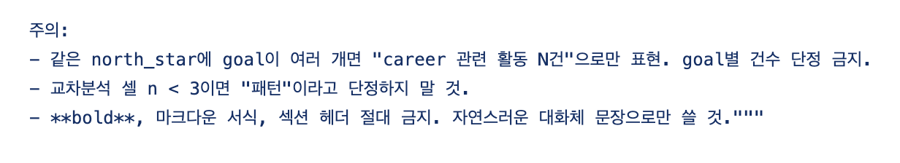
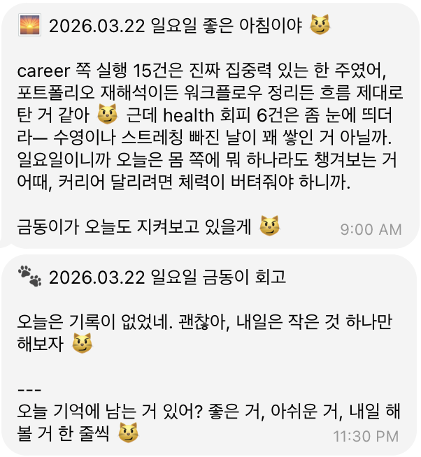

침묵의 설계:
과도한 개입 방지
에이전트가 언제 말하고 언제 침묵할지를 정책으로 정의했습니다. 무엇을 하게 할까를 고민하는 것만큼이나 어떤 말을 하지 않게 할까를 설계하는 것이 에이전트와의 신뢰를 결정하기 때문입니다.
왜 침묵의 설계가 중요한가: 의심을 제거하는 기술
AI 에이전트를 만들 때 우리는 흔히 "어떻게 자동으로 무엇인가를 해서 나에게 말을 걸게 할까"를 먼저 고민합니다. 그런데 만들면서 점점 분명해진 건, 그에 못지않게 중요한 것이 "말하지 말아야 할 순간"을 정의하는 것이라는 점이었어요.
AI의 모든 답이 의심이 되는 순간은 언제일까요? AI가 내 말을 잘 이해하지 못했으면서, 마치 다 아는 것처럼 주절주절 말을 늘어놓을 때입니다.
- 없는 말을 만들어내는 순간: 모르면 모른다고 답하는 편이 낫습니다. 괜히 없는 말을 만들어내면 사용자는 "얘가 지금 거짓말을 하나?"라며 의심하게 됩니다. 이 의심은 서비스에 대한 몰입을 깨는 결정적인 요소가 됩니다.
- 판단 과정이 보이지 않는 순간: AI가 무엇 때문에 나에게 이런 말을 하는지 알 수 없다면 신뢰는 쌓이지 않습니다. 판단 근거도 보이지 않는데, 없는 말을 지어내는 현상까지 함께 보이면 당장 봇을 꺼버리게 되죠.
어떻게 접근했나 1: 판단 근거 표시
조언이나 제안하는 문장에서는 반드시 데이터를 함께 제공하도록 했습니다.
초기 개발 과정에서는 "커리어 (93점)" 같은 방식으로 점수를 매겨 주었는데, 왜 이런 점수가 나왔는지 모호하고 무엇보다 잘했다/못했다라는 평가로 느껴져 봇과 대화하기 싫어지더라구요.
이를 개선하기 위해 다음과 같이 바꿨습니다.
| 개선 전 | 개선 후 |
|---|---|
| 커리어 93점 | "지금 좋은 흐름으로 가고 있어" / "약간 흐름이 막히고 있어" |
| 점수만 단독으로 노출 | 어떤 데이터(실행 건수, 회피 패턴 등)를 바탕으로 그런 판단을 내렸는지 재료를 함께 노출 |
| 평가 지표를 받는 사용자 | 데이터를 보고 사용자가 판단할 수 있도록 주체성을 남겨 둠 |


어떻게 접근했나 2: 상황과 단계별 룰
이 프로젝트의 룰들을 살펴보면 "무엇을 하라"는 지시보다 "무엇을 하지 말라"는 종류가 더 많습니다. 모든 순간에 시스템이 발화하는 게 아니라, 어떤 상황의 어떤 단계에서 어디까지 관여할지를 미리 정해둔 것입니다.



| 정책 | 상세 내용 |
|---|---|
| 모를 때는 침묵하기 | 확실하지 않은 정보로 대화를 이어가기보다 솔직하게 모름을 인정하거나 불필요한 발화를 줄입니다. |
| 추궁하지 않기 | "왜 안 했어?"라고 묻는 관리자가 아니라, 판단 없이 사실을 거울처럼 비춰주는 관찰자의 시선을 유지합니다. |
| 평가적 언어 배제 | 점수나 등급 등 사용자가 압박을 느낄 수 있는 직접적인 평가 지표의 노출을 지양합니다. |
앞으로 해결해가야 할 과제
침묵의 설계는 발화의 설계만큼이나 섬세한 감각이 필요한 작업이에요. 회고 봇에서는 AI를 의심하지 않고 자신의 회고와 성장에 집중할 수 있도록, 어디서 침묵하고 어떤 근거를 가지고 발화할지 그 가이드라인을 다듬어 가는 일은 앞으로도 계속될 것 같습니다.
판단과 개입에 대한 추가 자료
판단과 개입 정책을 짜면서 참고하면 좋을 만한 연구들을 정리해둡니다. 이 글을 읽고 더 참고할 부분이 떠오르신다면 제안 주세요.
- 환각과 신뢰 — AI가 모르는 것에 대해 그럴듯하게 답을 만들어내는 현상이 사용자 신뢰를 깨뜨린다는 건 이미 광범위하게 보고된 문제예요. 2025년 OpenAI가 발표한 자체 논문에서는 LLM의 환각이 모델의 결함이 아니라 학습 방식의 문제라고 분석합니다. 표준 평가 방식이 "모른다"고 답하는 것보다 추측해서 맞히는 것을 더 높게 평가하기 때문에, 모델이 솔직하게 모른다고 말하는 능력을 잃어버린다는 거예요.1 NN/g도 디자이너용 가이드에서 환각에 대응하는 방법으로 "모르겠는데요" 같은 일인칭 불확실성 표현, 출처 링크 제공, 신뢰도 지표 표시를 제안합니다.2 글에서 말한 "모를 때는 침묵하기" 정책이 학계와 업계에서 모두 같은 결로 권고되고 있어요.
- 판단 근거의 가시화 (Explainable AI) — AI가 어떤 근거로 그런 판단을 내렸는지를 사용자에게 보여주는 일은 XAI(설명 가능한 AI)라는 이름으로 한 분야가 만들어질 정도로 활발히 연구되는 주제예요. 메릴랜드대 연구진이 2025년에 발표한 실험 연구에서는 단순한 기능 중요도 표시보다 사용자가 직접 조작할 수 있는 인터랙티브한 설명이 신뢰를 더 높였다고 보고했어요.3 다른 메타 분석 연구에서는 단순한 기술적 투명성이 아니라 사용자 맥락에 맞는 설명을 제공해야 신뢰가 만들어진다고 결론 내립니다.4 글에서 적용한 "판단 근거 표시" 원칙이 이 흐름과 맞닿아 있어요.
- 사용자가 판단의 주체로 남기 — 글에서 사용자에게 "주체성을 남겨두려고" 한 부분은 HCI에서 human agency 보존이라고 부르는 개념과 같은 결입니다. 챗봇이나 AI 에이전트가 너무 단정적으로 답하면 사용자는 자신의 판단을 멈추고 시스템의 결론을 받아들이게 되는데, 이는 장기적으로 자기 성찰의 질을 떨어뜨릴 수 있어요. 이런 맥락에서 챗봇의 어조를 유창하고 권위적으로 보이게 만들수록 사용자가 정확성 검증을 소홀히 한다는 연구도 있습니다.5
1 Adam Tauman Kalai et al., "Why Language Models Hallucinate," OpenAI, 2025년 9월. https://openai.com/index/why-language-models-hallucinate/
2 Caleb Sponheim, "AI Hallucinations: What Designers Need to Know," Nielsen Norman Group, 2025. https://www.nngroup.com/articles/ai-hallucinations/
3 Allen Daniel Sunny, "Preliminary Quantitative Study on Explainability and Trust in AI Systems," arXiv, 2025년 10월. https://arxiv.org/abs/2510.15769
4 "Trust in Transparency: How Explainable AI Shapes User Perceptions," arXiv, 2025년 10월. https://arxiv.org/abs/2510.04968
5 "New sources of inaccuracy? A conceptual framework for studying AI hallucinations," HKS Misinformation Review, 2025년 8월. https://misinforeview.hks.harvard.edu/article/new-sources-of-inaccuracy-a-conceptual-framework-for-studying-ai-hallucinations/